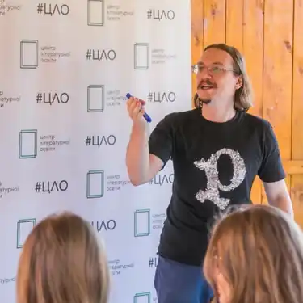

Володимир Костянтинович Пузій народився в Києві 1 жовтня 1978. Зі шкільних років захоплювався біологією. Ходив у гурток юннатів при Київському зоопарку, серйозно займався терраріумістікою (утримував екзотичних амфібій та комах). Закінчив школу в 1995-му році, вступав на біологічний факультет – не вступив, пішов на рік працювати двірником в тому ж таки Київському зоопарку.
Восени 1996 року вступив до Інституту журналістики при КHУ ім. Т. Шевченка (спеціалізація: журналістська майстерність та редакційно-видавнича справа). Закінчив у 2002 році з червоним дипломом магістра. На даний момент — асистент кафедри історії журналістики в тому ж таки ІЖ-і.
Перший художній твір було надруковано в 1998 році. Коли справа дійшла до публікації першої книжки, видавець ("Альфа-книга", Росія) запропонував вигадати собі псевдонім. Так з'явився Володимир Арєнєв. Відтоді практично всі художні твори автора виходять під псевдонімом, а справжнім прізвищем він підписує публіцистичні матеріали. Працює в широкому спектрі жанрів і тем. Серед його творів можна знайти і класичну фентезі, сюрреалістичну прозу, містику, наукову фантастику, дитячі казки, фантастичні гуморески тощо. На початок 2010 року має 16 сольних книг і більше сотні публікацій в міжавторських збірках і періодиці. Публікується російською, українською, литовською, польскою мовами. Нерідко сам перекладає свої книги з російської на українську. Під своїм справжнім прізвищем відомий як літературний критик і журналіст. У різні роки співпрацював із такими виданнями як: "Дзеркало тижня", "Сегодня", "Реальность фантастики", "Мир фантастики", "Fan-тастика" та ін. Активно пише рецензії та аналітичні статті, виступає із доповідями на конвентах і фестивалях фантастики. Літературно-критичні праці В.Пузія неодноразово були відзначені преміями, в тому числі — премією імені Олександра Бєляєва (2008). Лауреат міжнародної українсько-німецької премії імені Олеся Гончара (2001). Фіналіст незалежної премії "Дебют" (Росія). У 2004 році на "Євроконі" був визнаний кращим молодим автором України. Книги: • "Отчаяние драконов" (2000) • "Охота на героя" (2000) • "Книгоед" (у співавторстві з Юрієм Нікітінським) (2000 — рос., 2004 — укр.) • "Монетка на удачу" (2003) • "Бісова душа, або Заклятий скарб" (2003) • "Правила гри" (2000 — рос., 2004 — укр., у 2 тт.) • "Місто тисячі Дверей" (2004) • "Паломничество жонглёра" (2005) • "Дикі володарі" (2005) • "Немой учитель" (2006) • "Магус" (2006 — рос., 2007 — укр.)